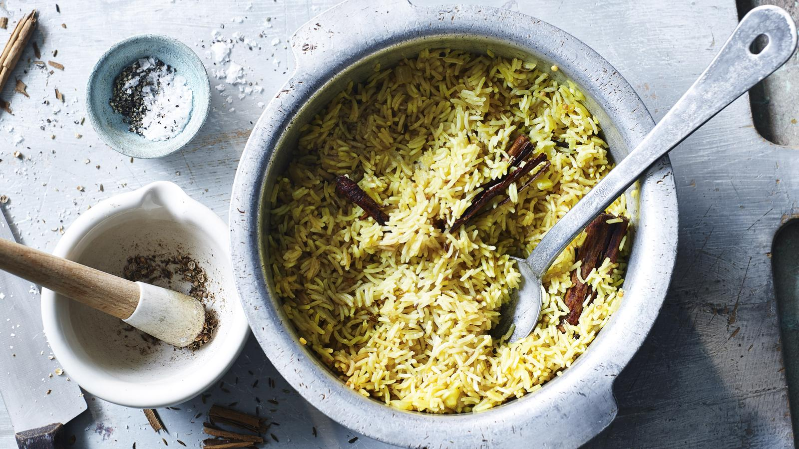

Pilau rice

Description
Pilau rice is the perfect accompaniment to a curry feast. The Hairy Bikers add whole cardamom, cloves, bay and cinnamon for a heady fragrance, along with a nice bit of butter and chicken stock for a rich taste. Serve with any of your favourite curries.
The dish is sometimes called a pilaf, pilaw, pullao, or pilav, depending on the country in which it’s being cooked. The word (or maybe we should say ‘words’) refers to the cooking technique, rather than the dish itself.
Ingredients
- ½ tsp coriander seeds
- 6 cardamom pods
- 1 tsp cumin seeds
- 8 cloves
- 1 cinnamon stick
- 2 bay leaves
- 75g/2½oz butter
- 1 small onion, finely chopped
- 1 garlic clove, finely chopped
- ½ tsp ground turmeric
- ½ tsp black mustard seeds
- 300g/10½oz basmati rice, rinsed and drained
- 500ml/18fl oz chicken or vegetable stock, fresh or made from 1 stock cube
sea salt and freshly ground black pepper
Steps
- Using a pestle and mortar, pound the coriander seeds into a coarse powder. Add the cardamom pods and grind until the husks split and the seeds are lightly crushed. Add the cumin, cloves, cinnamon and bay and pound very lightly for a few seconds, to mix.
- Melt half the butter in a sauté pan or wide-based saucepan over a medium heat. Fry the onion and garlic for 5 minutes, or until softened, stirring regularly. Sprinkle in the turmeric and mustard seeds, plus all the ingredients from the pestle and mortar. Fry gently for 2 minutes, stirring.
- Mix in the rice to coat it in the buttery spices. Add the stock and a good pinch of black pepper. Add a pinch of salt if needed (stock from a cube will already contain salt).
- Stir well and bring to the boil. Give a final stir then cover the pan with a tight-fitting lid. Reduce the heat to its lowest setting and cook for 15 minutes.
- When the rice is cooked, cut the rest of the butter into small pieces. Remove the pan lid and dot the butter over the hot rice. Leave to melt for a few seconds, then quickly fluff up the rice using a fork, taking care not to break up the grains.
- Replace the lid and leave to stand for 5 minutes before serving. (Warn your guests not to eat the cardamom, cinnamon or any whole cloves.)